Smart Entry & Start System (Start System) Power does not Turn On (Neither ACC nor IG Turns On) (Only ACC does not Turn On) (Only IG does not Turn On) |
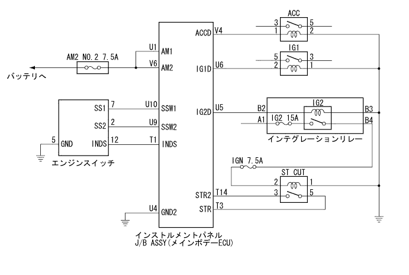
| Step 1 | Inspect Fuse |
Using SST (Toyota electrical tester), inspect the resistance of the fuse.
| Tester Connection | Condition | Resistance |
|---|---|---|
| AM2 NO.2 fuse | Always | Below 1 Ω |
| IG2 Fuse | Always | Below 1 Ω |
|
| ||||
| OK | |
| Step 2 | Inspect Wire Harness (Power Source) |
Voltage Inspection
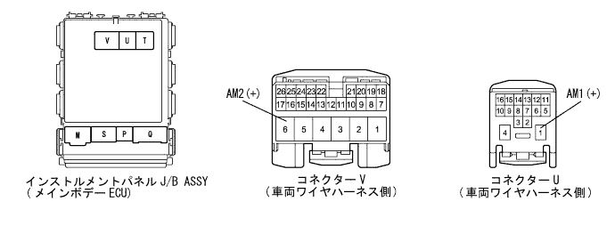
Disconnect connectors U and V of the instrument panel J/B assembly (main body ECU).
Using SST (Toyota electrical tester), inspect the voltage between each terminal of the vehicle side wire harness connector and body ground.
| Tester Connection | Condition | Standard |
|---|---|---|
| U1 (AM1) - Body ground | Always | 11 to 14V |
| V6 (AM2) - Body ground | Always | 11 to 14V |
|
| ||||
| OK | |
| Step 3 | Inspect Wire Harness (GND) |
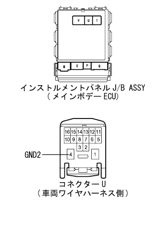 |
Resistance Inspection
Using SST (Toyota electrical tester), inspect the resistance between the terminal of the vehicle side wire harness connector and body ground.
| Tester Connection | Condition | Standard |
|---|---|---|
| U4 (GND2) - Body ground | Always | Below 1 Ω |
|
| ||||
| OK | |
| Step 4 | Check DTC |
Connect the instrument panel J/B assembly (main body ECU) connector.
With the IG OFF, brake OFF, and the electrical key transmitter (electronic key) carried or held near the engine switch (match the conditions when the problem occurred), 5 seconds after turning the engine switch ON, use SST (TaSCAN) to check the DTC output status of the instrument panel J/B assembly (main body ECU).
|
| ||||
| OK | |
| Step 5 | Read TaSCAN Data |
ECU Data Monitor
Using SST (TaSCAN), perform data monitor of the instrument panel J/B assembly (main body ECU).
| Item | Condition | Reference Value |
|---|---|---|
| Push StartSW1 | Engine switch pushed/released | ON / OFF |
| Push StartSW2 | Engine switch pushed/released | ON / OFF |
|
| ||||
| OK | |
| Step 6 | Inspect Relay (ACC Relay, IG1 Relay, IG2 Relay) |
Resistance Inspection (IG1 Relay)
Remove the IG1 relay.
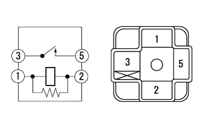 |
Using SST (Toyota electrical tester), inspect the resistance between each pair of relay terminals.
| Tester Connection | Condition | Standard |
|---|---|---|
| 1 - 2 | Always | 155 to 200Ω |
| 3 - 5 | Always | 10k Ω or higher |
Using SST (Toyota electrical tester), check the resistance between the terminals when battery voltage is applied between terminals 1 and 2.
| Tester Connection | Condition | Standard |
|---|---|---|
| 3 - 5 | When battery voltage is applied | Below 1 Ω |
Resistance Inspection (ACC Relay)
Remove the ACC relay.
 |
Using SST (Toyota electrical tester), inspect the resistance between each pair of relay terminals.
| Tester Connection | Condition | Specified Condition |
|---|---|---|
| 1 - 2 | Always | 130 to 230Ω |
| 3 - 5 | Always | 10k Ω or higher |
Using SST (Toyota electrical tester), check the resistance between the terminals when battery voltage is applied between terminals 1 and 2.
| Tester Connection | Condition | Standard |
|---|---|---|
| 3 - 5 | When battery voltage is applied | Below 1 Ω |
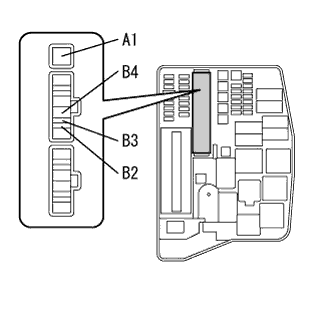 |
Resistance Inspection (IG2 Relay)
Remove the integration relay (IG2 relay).
Using SST (Toyota electrical tester), inspect the resistance between each pair of relay terminals.
| Tester Connection | Condition | Specified Condition |
|---|---|---|
| B3 - B2 | Always | 250 to 387Ω |
| A1 - B4 | Always | 10k Ω or higher |
Using SST (Toyota electrical tester), inspect the resistance between the relay terminals when battery voltage is applied between terminals B3 and B2.
| Tester Connection | Condition | Specified Condition |
|---|---|---|
| A1 - B4 | When battery voltage is applied | Below 1 Ω |
|
| ||||
| OK | |
| Step 7 | Inspect Wire Harness (Instrument Panel J/B Assembly (Main Body ECU) - ACC Relay, IG1 Relay, Integration Relay (IG2 Relay)) |
Resistance Inspection (Main Body ECU - ACC Relay)
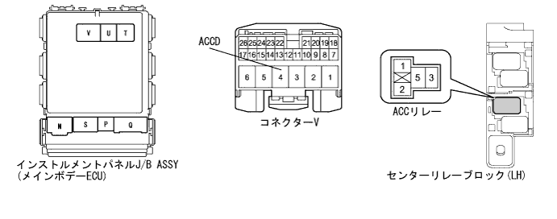
Disconnect connector V of the instrument panel J/B assembly (main body ECU).
Using SST (Toyota electrical tester), inspect the resistance between the terminals of the vehicle side wire harness connector.
| Inspection terminals (Main body ECU - ACC relay) | Condition | Standard |
|---|---|---|
| V4(ACCD) - 1 | Always | Below 1 Ω |
Using SST (Toyota electrical tester), inspect the resistance between each terminal of the vehicle side wire harness connector and body ground.
| Inspection terminals (Main body ECU or ACC relay - Body ground) | Condition | Standard |
|---|---|---|
| V4 (ACCD) or 1 - Body ground | Always | 10k Ω or higher |
| Inspection terminals (ACC relay - Body ground) | Condition | Specified Condition |
|---|---|---|
| 2 - Body ground | Always | Below 1 Ω |
Resistance Inspection (Main Body ECU - IG1 Relay)
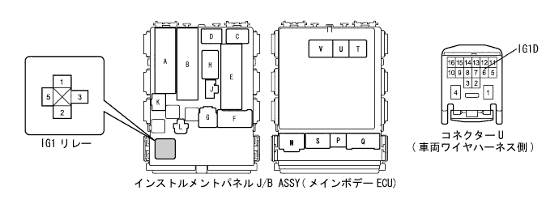
Disconnect connector U of the instrument panel J/B assembly (main body ECU).
Using SST (Toyota electrical tester), inspect the resistance between the terminals of the vehicle side wire harness connector.
| Inspection terminals (Main body ECU - IG1 relay) | Condition | Standard |
|---|---|---|
| U6(IG1D) - 2 | Always | Below 1 Ω |
Using SST (Toyota electrical tester), inspect the resistance between each terminal of the vehicle side wire harness connector and body ground.
| Inspection terminals (Main body ECU or IG1 relay - Body ground) | Condition | Standard |
|---|---|---|
| U6 (IG1D) or 2 - Body ground | Always | 10k Ω or higher |
| Inspection terminals (IG1 relay - Body ground) | Condition | Standard |
|---|---|---|
| 1 - Body ground | Always | Below 1 Ω |
Resistance Inspection (Main Body ECU - IG2 Relay)
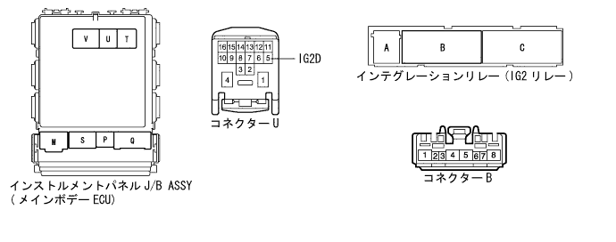
Disconnect connector U of the instrument panel J/B assembly (main body ECU).
Using SST (Toyota electrical tester), inspect the resistance between the terminals of the vehicle side wire harness connector.
| Inspection terminals (Main body ECU - IG2 relay) | Condition | Standard |
|---|---|---|
| U5(IG2D) - B2 | Always | Below 1 Ω |
Using SST (Toyota electrical tester), inspect the resistance between each terminal of the vehicle side wire harness connector and body ground.
| Inspection terminals (Main body ECU or IG2 relay - Body ground) | Condition | Standard |
|---|---|---|
| U5 (IG2D) or B2 - Body ground | Always | 10k Ω or higher |
| Inspection terminals (IG2 relay - Body ground) | Condition | Standard |
|---|---|---|
| B3 - Body ground | Always | Below 1 Ω |
|
| ||||
| OK | |
| Step 8 | Inspect Instrument Panel J/B Assembly (Main Body ECU) |
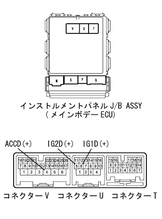 |
Voltage Inspection
Connect the instrument panel J/B assembly (main body ECU) connector.
Using SST (Toyota electrical tester), inspect the voltage between each terminal and body ground from the back side of the connector.
| Tester Connection | Condition | Standard |
|---|---|---|
| V4 (ACCD) - Body ground | IG OFF→ACC ON | 1V or less → { (AM1 or AM2) - 2V} or more |
| U6 (IG1D) - Body ground | IG OFF→IG ON | 1V or less → { (AM1 or AM2) - 2V} or more |
| U5 (IG2D) - Body ground | IG OFF→IG ON | 1V or less → { (AM1 or AM2) - 2V} or more |
|
| ||||
| OK | ||
| ||
| Step 9 | Inspect Engine Switch |
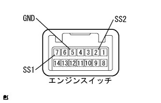 |
Resistance Inspection
Disconnect the engine switch connector.
Using SST (Toyota electrical tester), inspect the resistance between each pair of connector terminals.
| Tester Connection | Condition | Standard |
|---|---|---|
| 7(SS1) - 5(GND) | Switch not pushed | 10k Ω or higher |
| 2(SS2) - 5(GND) | Switch not pushed | 10k Ω or higher |
| 7(SS1) - 5(GND) | Switch pushed | Below 1 Ω |
| 2(SS2) - 5(GND) | Switch pushed | Below 1 Ω |
|
| ||||
| OK | |
| Step 10 | Inspect Wire Harness (Instrument Panel J/B Assembly (Main Body ECU) - Engine Switch) |
Resistance Inspection
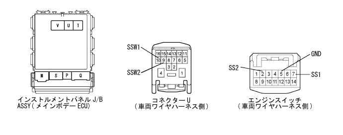
Disconnect connector U of the instrument panel J/B assembly (main body ECU).
Using SST (Toyota electrical tester), inspect the resistance between each pair of terminals of the vehicle side wire harness connector.
| Inspection terminals (Main body ECU - Switch) | Condition | Standard |
|---|---|---|
| U10(SSW1) - 7(SS1) | Always | Below 1 Ω |
| U9(SSW2) - 2(SS2) | Always | Below 1 Ω |
Using SST (Toyota electrical tester), inspect the resistance between each terminal of the vehicle side wire harness connector and body ground.
| Inspection terminals (Main body ECU or switch - Body ground) | Condition | Standard |
|---|---|---|
| U10 (SSW1) or 7 (SS1) - Body ground | Always | 10k Ω or higher |
| U9 (SSW2) or 2 (SS2) - Body ground | Always | 10k Ω or higher |
| Inspection terminals (Switch - Body ground) | Condition | Standard |
|---|---|---|
| 5 (GND) - Body ground | Always | Below 1 Ω |
|
| ||||
| OK | ||
| ||